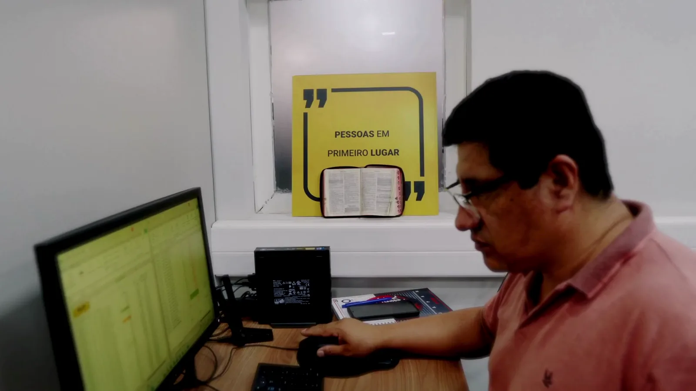

Energia / Locação
Cases organizados pelo desafio, pela solução aplicada e pelo impacto percebido na operação.





Cada história deve mostrar de onde partiu o desafio, como a solução foi implantada e qual evidência sustenta o resultado.
A página está preparada para receber fotos, vídeo, depoimento, métricas aprovadas e produtos relacionados sem inventar informações.
Ambiente, duração, restrições e pessoas envolvidas.
Configuração técnica e processo de implantação.
Métrica validada, depoimento ou evidência operacional.